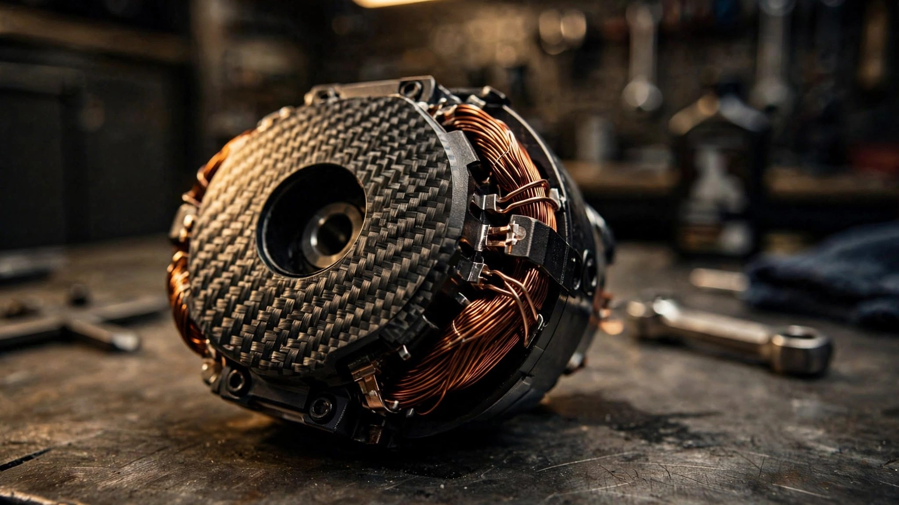

Carbon Fiber Coils, 800 Horsepower, 86 Pounds: Inside Koenigsegg's Dark Matter Raxial Flux Motor
Koenigsegg's production-spec Gemera ships with a single electric motor that produces 800 hp and 1,250 Nm from a package weighing 39 kg. It replaces the three motors in the original concept car. Its carbon fiber rotor and stator structures have never appeared in any other production motor, and its "raxial flux" topology is a word Koenigsegg had to coin because the engineering category did not previously exist.

Two Kinds of Flux, One Persistent Tradeoff
Every electric motor works by the same basic principle: current flowing through a conductor creates a magnetic field, and that field interacts with permanent magnets to produce rotational force. How you arrange the conductors and magnets relative to the axis of rotation determines the motor's fundamental character. In the automotive world, two arrangements dominate, and each carries an inherent compromise.
Radial flux motors arrange the permanent magnets around the outside of the rotor (or inside, depending on the design) so that the magnetic field lines point outward from the axis, perpendicular to the shaft. Imagine a donut-shaped stator surrounding a cylindrical rotor. Current flows through copper windings in the stator, creating fields that pull the magnetized rotor around in a circle. Almost every electric car on the road uses this topology. Tesla's Plaid motors are radial flux. So are Lucid's highly efficient units. Radial flux motors excel at high rotational speeds and produce strong peak power. But they tend toward cylindrical shapes that are longer than they are wide, and their torque output per unit volume is limited by the relatively long magnetic flux path from one rotor pole through the stator teeth to the next pole.
Axial flux motors flip the geometry. Instead of a donut surrounding a cylinder, picture a stack of pancakes. Permanent magnets face the stator coils across an air gap that runs parallel to the shaft rather than perpendicular to it. Because the flux path is shorter and more direct (it simply crosses the air gap from one face to another), axial flux motors produce substantially more torque per kilogram. British firm YASA, now owned by Mercedes, pioneered automotive axial flux motors and supplies them for the AMG project. But the tradeoff is real: axial flux motors are harder to spin at very high RPM because the large-diameter rotor disc creates significant centripetal stress on the magnets at speed. More torque, less speed. Broader, flatter packages.
For decades, engineers chose one or the other. High-speed applications got radial flux. High-torque, compact applications got axial flux. Nobody combined them in a production automotive motor until Koenigsegg decided that choosing was the wrong approach.
Raxial Flux: A Category That Required Invention
When Christian von Koenigsegg describes the Dark Matter's flux topology, he uses a characteristic understatement. "Mostly axial, with a bit of radial flux," he told MotorTrend. What that means in practice is a motor that looks like an axial flux unit (a flat disc, 383.3 mm in diameter and just 135.5 mm thick) but incorporates a secondary radial flux component that extends the torque curve and flattens torque ripple across the operating range.
Koenigsegg achieved this by increasing the rotor diameter beyond what a pure axial flux design would use, pushing it outward relative to the stator core. At the outer edge of the enlarged rotor, the magnetic field lines begin to follow a radial path through the stator's outer diameter rather than an exclusively axial one. So the same rotor disc generates torque through two distinct electromagnetic mechanisms simultaneously: axial flux dominates across the face, and radial flux contributes at the perimeter. Koenigsegg optimized the stator's outer diameter specifically to capture and convert this peripheral radial flux rather than letting it dissipate as waste.
Why does this matter? A pure axial flux motor at 8,500 RPM would generate enormous centripetal force on the rotor magnets. A pure radial flux motor in this form factor would not produce enough torque. By operating in both regimes, Dark Matter achieves 1,250 Nm of peak torque (a figure typically associated with axial flux designs far larger than this one) while still spinning to 8,500 RPM (territory usually reserved for high-speed radial flux units). It does not compromise between the two topologies. It runs both, concurrently, in a single rotor-stator assembly.
Koenigsegg coined the word "raxial" for this because no existing term described it. Patent filings are pending, and the company has disclosed very little about the internal geometry beyond what is visible from outside the carbon fiber housing. We know the arrangement. We do not yet know the exact magnetic circuit topology, pole count, or winding configuration that makes it work.
Carbon Fiber Where Laminated Steel Should Be
In nearly every electric motor ever mass-produced, the stator and rotor structures are made from stacks of thin, stamped silicon steel laminations. Steel is used because it is an excellent conductor of magnetic flux. It is laminated (built from many thin sheets rather than one solid piece) because eddy currents, tiny circular currents induced in the metal by the changing magnetic field, generate waste heat. Thinner laminations mean higher resistance to eddy currents, less heat, and better efficiency. This is well-understood engineering that dates back to the 19th century.
Koenigsegg abandoned this approach entirely. In the Dark Matter, both the rotor structure and stator structure use carbon fiber composites instead of laminated steel. Not just the housing or the casing, which some motors do use composites for, but the actual structural elements that carry magnetic flux and support the copper windings and permanent magnets. No other production electric motor has done this.
Carbon fiber is not a natural conductor of magnetic flux. Steel is used in motors precisely because it provides a low-reluctance path for flux to flow through the magnetic circuit. So why use carbon fiber? Because in a raxial flux design operating at 8,500 RPM, the structural demands on the rotor are extreme. Centripetal acceleration at the outer edge of a 383 mm diameter rotor spinning at 8,500 RPM reaches roughly 15,500 g. At those loads, the magnets want to fly outward with tremendous force. In a conventional steel lamination stack, this means thicker laminations, more bolts, more mass dedicated to mechanical retention rather than electromagnetic function.
Carbon fiber's tensile strength-to-weight ratio is roughly ten times that of steel. A carbon fiber rotor structure can contain those magnets at 8,500 RPM while weighing a fraction of what a steel equivalent would require. Forged carbon fiber (randomly oriented short fibers in a resin matrix, pressed under heat and pressure) provides isotropic strength, meaning it resists forces equally in all directions. For a rotor experiencing both axial magnetic forces and radial centripetal forces simultaneously, isotropic strength is exactly the right material property.
On the stator side, carbon fiber eliminates eddy current losses entirely. Carbon fiber composites are electrically non-conductive. Zero eddy currents means zero eddy current heating in the stator structure. Flux still needs a path through the stator, which likely means the permanent magnet geometry and air gap design carry the full magnetic circuit burden without relying on a ferromagnetic stator back-iron in the traditional sense. Koenigsegg has not published this detail, but the implication is that the motor's magnetic circuit is radically different from any conventional design, not just in topology but in the fundamental materials carrying the flux.
All of this results in a motor that weighs 39 kg. For 600 kW (800 hp) of output, that is a gravimetric power density of approximately 15.4 kW per kilogram. For comparison, a Tesla Model S Plaid rear motor produces roughly 375 kW from approximately 30 kg (about 12.5 kW/kg). A YASA axial flux unit delivers around 75 kW from 24 kg (about 3.1 kW/kg, though YASA's design prioritizes efficiency over peak power). At the extreme end, Formula E motors operate near 20 kW/kg but last a season, not a lifetime, and accept thermal limits that a road car never would.
Six Phases and the David Inverter
Almost every automotive electric motor runs on three-phase alternating current. Three groups of stator coils are energized in sequence, 120 degrees apart, creating a rotating magnetic field that drags the rotor around. Simple, proven, and limited.
Dark Matter uses six phases. Specifically, two independent sets of three-phase windings, offset from each other by 30 electrical degrees. Each set is a complete three-phase motor in its own right. Running them together with a 30-degree offset produces several measurable benefits.
First, torque ripple drops substantially. In a three-phase motor, torque output pulsates slightly six times per electrical revolution as the discrete coil groups hand off magnetic force to one another. Those pulsations create vibration, noise, and mechanical stress. In a six-phase motor with 30-degree offset, the ripple frequency doubles and the amplitude halves. Smoother torque means less vibration, longer bearing life, and a more controllable power delivery at the tire contact patch.
Second, current per phase drops by half for the same total power output. At 800 volts and 600 kW of peak power, Dark Matter draws roughly 750 amps total. Split across six phases rather than three, each phase carries approximately 125 amps instead of 250 amps. Lower per-phase current means thinner conductors can be used without excessive resistive heating, or the same conductor size runs dramatically cooler. Thermal management is the single largest constraint on electric motor continuous power output, so running cooler directly translates to sustaining peak power for longer before thermal derating kicks in.
Third, fault tolerance improves. If one three-phase winding set develops a fault, the other can continue operating independently at reduced power. In a hypercar that combines its electric motor with a combustion engine, losing half the electric power is vastly preferable to losing all of it.
Controlling six phases requires an inverter substantially more complex than a standard three-phase unit. Koenigsegg's inverter, internally named "David," uses silicon carbide (SiC) semiconductor switches rather than the conventional silicon IGBTs found in most automotive inverters. Silicon carbide switches faster, conducts with lower resistance at high voltages, and tolerates higher temperatures before failure. David weighs 15 kg, handles over 1,300 amps, and operates at up to 850 volts. Its switching losses (the energy wasted every time a transistor turns on or off, which happens thousands of times per second) are roughly 50 percent lower than an equivalent silicon IGBT inverter. Less waste heat from the inverter means more of the battery's stored energy reaches the motor's copper windings as useful current.
| Parameter | Dark Matter | Tesla Plaid (single rear) | YASA P400 |
|---|---|---|---|
| Peak Power | 600 kW (800 hp) | ~375 kW (~503 hp) | 75 kW (100 hp) |
| Peak Torque | 1,250 Nm | ~640 Nm | 400 Nm |
| Mass | 39 kg | ~30 kg | 24 kg |
| Power Density | 15.4 kW/kg | ~12.5 kW/kg | 3.1 kW/kg |
| Phases | 6 | 3 | 3 |
| Flux Topology | Raxial | Radial (IPM) | Axial |
| Max RPM | 8,500 | ~20,000 | ~8,000 |
| Voltage | 850V | ~400V | ~750V |
One Motor Replaces Three
When Koenigsegg first showed the Gemera concept in 2020, its electric powertrain used three Quark motors. Quark was Koenigsegg's previous raxial flux design, a smaller unit producing roughly 250 kW and 600 Nm from 30 kg. Two Quarks drove the rear wheels individually (one per wheel, enabling torque vectoring), and one drove the front axle. Combined electric output: approximately 750 kW from 90 kg of motors.
By the time the production Gemera was revealed at Goodwood in July 2023, all three Quarks were gone. A single Dark Matter sits in the front axle assembly Koenigsegg calls "Bulldog," driving both front wheels through the Light Speed Tourbillon Transmission (LSTT), a nine-speed gearbox derived from the Jesko's Light Speed Transmission with additional clutch packs for hybrid integration and four-wheel torque vectoring.
One motor producing 600 kW from 39 kg replaced three motors producing 750 kW from 90 kg. Koenigsegg lost 150 kW of peak electric power but saved 51 kg and eliminated two motors, two sets of power electronics, two cooling circuits, and substantial wiring complexity. Combined with the 5.0-liter twin-turbocharged Hot V8 producing 1,500 hp through the same LSTT, the total system output reaches 2,300 hp and 2,750 Nm. With the alternative 2.0-liter three-cylinder Tiny Friendly Giant engine, the combination produces 1,400 hp. Both configurations use a 14 kWh battery pack at 850 volts.
Packaging drove this decision as much as performance. Fitting a 5.0-liter V8 with twin turbochargers into a four-seat hypercar alongside three electric motors was mechanically possible but made the rear of the car heavier and more complex than the engineering team wanted. Dark Matter's compact dimensions (roughly the diameter of a standard automotive brake rotor, and only 135 mm thick) gave them the space to run a single, simpler electric front axle while keeping the V8 option viable. A 39 kg motor in the nose is easier to package and balance than 60 kg of motors at the rear wheels.
What Dark Matter Does Not Tell Us
Koenigsegg's secrecy around Dark Matter's internals is deliberate and commercially rational. Patent protection is pending, and the few cutaway images released show only the forged carbon fiber exterior and copper winding terminations. Several critical engineering questions remain unanswered.
We do not know the permanent magnet material. Neodymium iron boron (NdFeB) is the industry default for high-performance motors, but it demagnetizes above roughly 150 degrees Celsius depending on grade. At the thermal loads inside an 800 hp motor, magnet grade selection and thermal management around the magnets become central design problems. Whether Koenigsegg uses a high-temperature NdFeB grade, samarium cobalt (which tolerates higher temperatures but costs more and produces less flux), or something else entirely is undisclosed.
We do not know how the magnetic circuit handles flux without ferromagnetic stator laminations. A conventional motor relies on the stator's silicon steel back-iron to complete the magnetic circuit and guide flux efficiently from one pole to the next. Carbon fiber cannot do this. Either the air gap is designed to carry the full circuit (which would be unusual and would require extremely tight tolerances), or there are ferromagnetic elements embedded within the carbon fiber structure that Koenigsegg has not shown publicly. Soft magnetic composites, a pressed powder material that can conduct flux in three dimensions without the eddy current problems of solid steel, would be one plausible candidate.
We do not know the cooling architecture. A motor producing 600 kW from 39 kg in a volume roughly 20 liters generates extraordinary waste heat per unit volume. Liquid cooling through jackets around the stator is standard practice, but the carbon fiber housing may require different thermal interface strategies than a conventional aluminum or steel motor housing. Carbon fiber has poor thermal conductivity compared to metals, meaning heat generated in the windings must travel a different path to reach the coolant.
Each of these unknowns represents an engineering problem that Koenigsegg solved but has not yet published. When the patents eventually appear, they will likely reveal as much novel thinking in the magnetic circuit design and thermal management as in the raxial flux topology that gets all the attention.
A Roomba-Sized Object and the Future It Points Toward
Every major automaker is working on electric motor density. Mercedes acquired YASA for its axial flux expertise. BMW, Audi, and Ferrari have all signaled interest in axial flux for future EVs. Mahle developed a magnet-free axial flux motor aimed at reducing rare earth dependence. But none of these programs have attempted raxial flux, and none have used carbon fiber for structural motor components in production.
Koenigsegg builds roughly 80 cars per year. Its engineering innovations, from the Freevalve camless engine to the Light Speed Transmission's multi-clutch architecture, tend to exist as proofs of concept that larger manufacturers study but do not immediately adopt. Dark Matter may follow the same pattern: a demonstrator that the broader industry watches for a decade before fragments of its approach appear in mainstream vehicles.
Or it may not. An 86-pound motor producing 800 horsepower changes the packaging constraints for every electric vehicle platform. If the raxial flux concept and carbon fiber construction can be scaled to higher production volumes with acceptable cost, it enables vehicle architectures that current motors simply cannot fit inside. A motor this small and powerful can go places that existing motors cannot: inside a wheel assembly, behind a transmission, alongside a combustion engine in a space designed for a starter motor. It does not just improve the electric motor. It reopens the design space for the entire vehicle.
Whether that future arrives through Koenigsegg's patents or through independent reinvention at scale, the Dark Matter has already established the benchmarks. 15.4 kW/kg. Carbon fiber rotor and stator. Six phases at 850 volts through silicon carbide. A package you could carry in a backpack. Calling it Dark Matter was the marketing choice. What it actually is, is the first production electric motor where every material and every topological decision was made without deference to how electric motors have always been built.